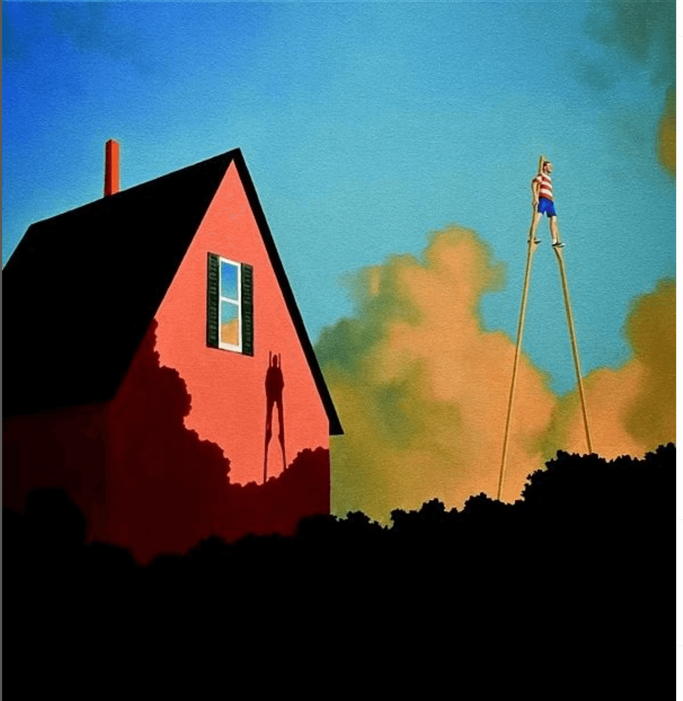

week 10 of 2023

The surreal worlds created by Rob Browning have certain emptiness to them that I find compelling lately. They aren’t empty, by any means, but there’s a sense of loneliness and isolation that is somehow calming. Good reminder that both in art and life, we all need a bit of white space.
I’ve been extremely busy the last several weeks with whole classes or marking periods coming to an end, school presentations and activities, snow days, and probably other stuff I can’t even remember. No surprise this neat things project got pushed down on the list of priorities. I knew things like this would happen. No big deal.
concepts
Soft Fascination is a term that’s been catching my attention quite a lot lately. When you are focused on something that isn’t too mentally challenging, your attention can relax and drift. You are mindfully aware but not too connected. Think about how your mind can wander while taking a walk in the woods or sitting by a river. It is a relaxing experience that leads to new ideas and inspiration. You can’t force soft fascination but you can create the conditions in your life for it to arise naturally.
Wabi Sabi is the Japanese term for an appreciation for the beauty of impermanence and imperfection. It is a celebration of the natural world where things age, get broken and battered, show their scars and patina, and eventually fade away. There’s a shift from perfection toward worn and lived-in things, from slick mass-production to used and worn individuality. I’ve been aware of the concept for a long time but never really connected it to my need to add layers of texture and imperfections into my art. Most of what you find for Wabi Sabi relates to architecture and interior design, but I see connections with painting and graphic design as well. I’ve been collecting a bunch of resources, links, and videos to review and include on my site.
Open Culture has a wonderful history of Wabi Sabi on YouTube:
Recharging is something I’m trying to do more of. I have a tendency to work too hard and too long which leads to mental exhaustion and burnout. I’m giving myself reminders to slow down and recharge. Some noticeable progress happening.
quick links
- Artvee browse and download high-resolution, public domain artworks
- Free UI Resources for free stuff
- IconNoir free open source icons
- The Visual Design Syllabus for all the things to learn as a visual designer
- Shaun Tan makes really interesting and beautiful art
- Cozy video games that feel like reading a book I’ve played several of these. I’m a sucker for interactive narrative experiences
- T-Shaped vs V-Shaped employees pretty sure I’m V-Shaped but not sure what to do with that knowledge
- Serendipity by Design is about finding ideas in new places. Ties quite well into both Wabi Sabi and Soft Fascination. I’ll probably be digging deeper here soon
quotes
It’s rarely doing the work that is hard, it’s starting the work. Once you begin, it’s often less painful to continue working. This is why—in the beginning—it is often more important to build the habit of getting started than it is to worry about whether or not you are doing enough.
— James Clear
Like many creative people, I struggle with procrastination. I live comfortably in my head and often would rather spend time there thinking about interesting things. Sometimes you have to get out of your head and actually start doing the work that needs to be done. I know on a rational level from experience that you just need to get started with the work and that ideas will come while you are working. Sometimes I need to be reminded of that fact though.
The “if I had time” lie is a convenient way to ignore the fact that novels require being written and that writing happens a sentence at a time. Sentences can happen in a moment. Enough stolen moments, enough stolen sentences, and a novel is born — without the luxury of time.
— Julia Cameron
I wish I could find a way to make that happen, Julia, I really do. It takes me too long to get my brain working on something to just dip in and out between other things.
When you need to learn quickly, learn from others.
When you need to learn deeply, learn from experience.
— James Clear
Yes! I’ve been leaning heavily on YouTube and the internet to quickly learn Maya in time to teach concepts to my students. This works great for getting started with just about any topic but you really need to do the work yourself to learn things in a deeply meaningful way. I need so much more time to really get lost in all the things I find interesting (and to make connections between them).
Any observant local knows more than any visiting scientist. Always. No exceptions.
— Roger Payne, Biologist
When designing, trust the regular users who have an ongoing running experience with the product. They will always have the important insights the designers or even the bosses will ever have. Also, work with what you know.